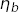

Matrix correlators, built from multiple sources and sinks, greatly improve results for the excited states in the correlators. Here we analyze  correlators using 4 sources/sinks using a prior designed by corrfitter.EigenBasis.
A major challenge when studying excited states with multi-source fits is the appearance in the fit of spurious states, with amplitudes that are essentially zero, between the real states in the correlator. These states contribute little to the correlators, because of their vanishing amplitudes, but they usually have a strong negative impact on the errors of states just below them and above them. They also can cause the fitter to stall, taking 1000s of iterations to change nothing other than the parameters of the spurious state. corrfitter.EigenBasis addresses this problem by creating a prior that discourages spurious states. It encodes the fact that only a small number of states still couple to the matrix correlator by moderate values of t, and therefore, that there exist linear combinations of the sources that couple strongly to individual low-lying states but not the others. This leaves little room for spurious low-lying states.
This example involves only two-point correlators. Priors generated by corrfitter.EigenBasis are also useful in fits to three-point correlators, with multiple eigen-bases if different types of hadron are involved.
The source code (etab.py) and data file (etab.data) are included with the corrfitter distribution, in the examples/ directory. The data are from the HPQCD collaboration.
The main method follows the template in Basic Fits, but modified to handle the|EigenBasis| object basis:
from __future__ import print_function # makes this work for python2 and 3
import collections
import gvar as gv
import numpy as np
from corrfitter import CorrFitter, Corr2, EigenBasis, read_dataset
DISPLAYPLOTS = False # display plots at end of fits?
try:
import matplotlib
except ImportError:
DISPLAYPLOTS = False
def main():
data, basis = make_data('etab.data')
fitter = CorrFitter(models=make_models(basis))
p0 = None
for N in range(1, 10):
print(30 * '=', 'nterm =', N)
prior = make_prior(N, basis)
fit = fitter.lsqfit(data=data, prior=prior, p0=p0, svdcut=0.0004)
p0 = fit.pmean
print_results(fit, basis, prior, data)
if DISPLAYPLOTS:
fitter.display_plots()
The eigen-basis is created by make_data('etab.data'):
def make_data(filename):
data = gv.dataset.avg_data(read_dataset(filename))
basis = EigenBasis(
data, keyfmt='1s0.{s1}{s2}', srcs=['l', 'g', 'd', 'e'],
t=(1,2), tdata=range(1,24),
)
return data, basis
It reads Monte Carlo data from file 'etab.data', which has the following format:
1s0.dd 0.143715 0.0588148 0.030329 ...
1s0.dd 0.129067 0.0538892 0.0426075 ...
...
1s0.de 0.120838 0.0510525 0.0306193 ...
1s0.de 0.110661 0.0610127 0.0369064 ...
...
1s0.dg 0.115676 0.0973511 0.0795044 ...
1s0.dg 0.123485 0.10629 0.0885328 ...
...
There are 113 lines in the file for each distinct tag 1s0.dd, 1s0.de ..., each with 23 numbers. Each line is a separate Monte Carlo estimate of the correlator identified by the tag for t=1...23. There are sixteen different correlators in all, with tags given by:
'1s0.{s1}{s2}'.format(s1=s1, s2=s2)
where s1 and s2 are drawn from the source list ['l', 'g', 'd', 'e'].
The data are read in, and their means and covariance matrix computed using gvar.dataset.avg_data(). corrfitter.EigenBasis then creates an eigen-basis by solving a generalized eigenvalue problem involving the matrices of correlators at t=1 and t=2. (One might want larger t values generally, but these data are too noisy.) The eigenanalysis constructs a set of eigen-sources that are linear combinations of the original sources chosen so that each eigen-source overlaps strongly with one of the lowest four states in the correlator, and weakly with all the others. This eigen-basis is used later to construct the prior.
A correlator fitter, called fitter, is created from the list of correlator models returned by make_models(basis):
def make_models(basis):
models = []
for s1 in basis.srcs:
for s2 in basis.srcs:
tfit = basis.tdata if s1 == s2 else basis.tdata[:14]
models.append(
Corr2(
datatag=basis.keyfmt.format(s1=s1, s2=s2),
tdata=basis.tdata, tfit=tfit,
a='etab.' + s1, b='etab.' + s2, dE='etab.dE',
)
)
return models
There is one model for each correlator to be fit, so 16 in all. The keys (datatag) for the correlator data are constructed from information stored in the basis. Each correlator has data (tdata) for t=1...23. We fit all t values (tfit) for the diagonal elements of the matrix correlator, but only about half the t values for other correlators — the information at large t is highly correlated between different correlators, and therefore somewhat redundant. The amplitudes are labeled by 'etab.l', 'etab.g', 'etab.d', and 'etab.e' in the prior. The energy differences are labeled by 'etab.dE'.
We try fits with N=1,2..9 terms in the fit function. The number of terms is encoded in the prior, which is constructed by make_prior(N, basis):
def make_prior(N, basis):
return basis.make_prior(nterm=N, keyfmt='etab.{s1}')
The prior looks complicated
k prior[k]
------------ ---------------------------------------------------------------
etab.l [-0.51(17), -0.45(16), 0.49(17), 0.103(93), -0.07(87) ...]
etab.g [-0.88(27), 0.107(98), 0.051(93), -0.004(90), -0.13(90) ...]
etab.d [-0.244(86), -0.50(15), -0.274(92), -0.166(71), -0.22(60) ...]
etab.e [-0.212(84), -0.41(13), -0.31(10), 0.27(10), -0.12(62) ...]
log(etab.dE) [-1.3(2.3), -0.5(1.0), -0.5(1.0), -0.5(1.0), -0.5(1.0) ...]
but its underlying structure becomes clear if we project it unto the eigen-basis using p_eig = basis.apply(prior, keyfmt='etab.{s1}'):
k p_eig[k]
------ ------------------------------------------------------------
etab.0 [1.00(30), .03(10), .03(10), .03(10), .2(1.0) ... ]
etag.1 [ .03(10), 1.00(30), .03(10), .03(10), .2(1.0) ... ]
etab.2 [ .03(10), .03(10), 1.00(30), .03(10), .2(1.0) ... ]
etab.3 [ .03(10), .03(10), .03(10), 1.00(30), .2(1.0) ... ]
The a priori expectation built into p_eig (and therefore prior) is that the ground state overlaps strongly with the first source in the eigen-basis, and weakly with the other three. Similarly the first excited state overlaps strongly with the second eigen-source, but none of the others. And so on. The fifth and higher excited states can overlap with every eigen-source. The priors for the energy differences between successive levels are based upon the energies obtained from the eigenanalysis (basis.E): the dE prior for the ground state is taken to be E0(E0), where E0=basis.E[0], while for the other states it equals dE1(dE1), where dE1=basis.E[1]-basis.E[0]. The prior specifies log-normal statistics for etab.dE and so replaces it by log(etab.dE).
The fit is done by fitter.lsqfit(...). An svd cut is needed (svdcut=0.0004) because the data are highly correlated. The data are also over-binned, to keep down the size of the corrfitter distribution, and this mandates an svd cut, as well.
Final results are printed out by print_results(...) after the last fit is finished:
def print_results(fit, basis, prior, data):
print(30 * '=', 'Results\n')
print(basis.tabulate(fit.transformed_p, keyfmt='etab.{s1}'))
print(basis.tabulate(fit.transformed_p, keyfmt='etab.{s1}', eig_srcs=True))
E = np.cumsum(fit.transformed_p['etab.dE'])
outputs = collections.OrderedDict()
outputs['a*E(2s-1s)'] = E[1] - E[0]
outputs['a*E(3s-1s)'] = E[2] - E[0]
outputs['E(3s-1s)/E(2s-1s)'] = (E[2] - E[0]) / (E[1] - E[0])
inputs = collections.OrderedDict()
inputs['prior'] = prior
inputs['data'] = data
inputs['svdcut'] = fit.svdcorrection
This method first writes out two tables listing energies and amplitudes for the first 4 states in the correlator. The first table shows results for the original sources, while the second is for the eigen-sources. The correlators are from NRQCD so only energy differences are physical. The energy differences for each of the first two excited states relative to the ground states are stored in dictionary outputs. These are in lattice units. outputs also contains the ratio of 3s-1s difference to the 2s-1s difference, and here the lattice spacing cancels out. The code automatically handles statistical correlations between different energies as it does the arithmetic for outputs — the fit results are all gvar.GVars. The outputs are tabulated using gvar.fmt_values(). An error budget is also produced, using gvar.fmt_errorbudget(), showing how much error for each quantity comes from uncertainties in the prior and data, and from uncertainties introduced by the svd cut.
Finally plots showing the data divided by the fit for each correlator are displayed (optionally).
Running the code produces the following output for the last fit (N=9):
============================== nterm = 9
Least Square Fit:
chi2/dof [dof] = 0.99 [260] Q = 0.52 logGBF = 2171
Parameters:
etab.l 0 -0.50672 (53) [ -0.51 (17) ]
1 -0.3915 (61) [ -0.45 (16) ]
2 0.350 (31) [ 0.49 (17) ]
3 0.145 (76) [ 0.103 (93) ]
4 -0.49 (20) [ -0.07 (87) ]
5 0.25 (45) [ -0.07 (87) ]
6 -0.12 (40) [ -0.07 (87) ]
7 0.21 (38) [ -0.07 (87) ]
8 -0.13 (46) [ -0.07 (87) ]
etab.g 0 -0.87028 (87) [ -0.88 (27) ]
1 0.1436 (52) [ 0.107 (98) ]
2 0.040 (11) [ 0.051 (93) ]
3 0.033 (35) [ -0.004 (90) ]
4 -0.173 (82) [ -0.13 (90) ]
5 -0.15 (24) [ -0.13 (90) ]
6 -0.04 (37) [ -0.13 (90) ]
7 0.18 (33) [ -0.13 (90) ]
8 -0.14 (44) [ -0.13 (90) ]
etab.d 0 -0.21632 (29) [ -0.244 (86) ]
1 -0.4100 (72) [ -0.50 (15) ]
2 -0.250 (17) [ -0.274 (92) ]
3 -0.093 (34) [ -0.166 (71) ] *
4 -0.106 (77) [ -0.22 (60) ]
5 0.04 (23) [ -0.22 (60) ]
6 -0.16 (35) [ -0.22 (60) ]
7 -0.33 (42) [ -0.22 (60) ]
8 -0.45 (46) [ -0.22 (60) ]
etab.e 0 -0.19704 (25) [ -0.212 (84) ]
1 -0.3413 (73) [ -0.41 (13) ]
2 -0.296 (15) [ -0.31 (10) ]
3 0.221 (54) [ 0.27 (10) ]
4 -0.052 (77) [ -0.12 (62) ]
5 0.06 (17) [ -0.12 (62) ]
6 0.05 (40) [ -0.12 (62) ]
7 -0.30 (41) [ -0.12 (62) ]
8 -0.51 (43) [ -0.12 (62) ]
log(etab.dE) 0 -1.36212 (67) [ -1.3 (2.3) ]
1 -0.648 (11) [ -0.5 (1.0) ]
2 -1.216 (61) [ -0.5 (1.0) ]
3 -0.91 (36) [ -0.5 (1.0) ]
4 -1.06 (79) [ -0.5 (1.0) ]
5 -0.83 (93) [ -0.5 (1.0) ]
6 -0.54 (96) [ -0.5 (1.0) ]
7 -0.45 (95) [ -0.5 (1.0) ]
8 -0.46 (99) [ -0.5 (1.0) ]
Settings:
svdcut/n = 0.0004/172 reltol/abstol = 1e-10/1e-10 (itns/time = 146/3.7)
This is a good fit, with a chi-squared per degree of freedom of 0.99 for 260 degrees of freedom (the number of data points fit); the Q or p-value is 0.52. This fit required 142 iterations, but took only a few seconds on a laptop.
The final energies and amplitudes for the original sources are listed as
E l g d e
==================================================================
0 0.25612(17) -0.50672(53) -0.87028(87) -0.21632(29) -0.19704(25)
1 0.7792(57) -0.3915(61) 0.1436(52) -0.4100(72) -0.3413(73)
2 1.076(21) 0.350(31) 0.040(11) -0.250(17) -0.296(15)
3 1.48(14) 0.145(76) 0.033(35) -0.093(34) 0.221(54)
while for the eigen-sources they are
E 0 1 2 3
==================================================================
0 0.25612(17) 0.97956(97) 0.00644(46) -0.00238(21) 0.00164(14)
1 0.7792(57) -0.0337(47) 0.877(11) -0.019(13) 0.0139(55)
2 1.076(21) 0.036(10) 0.099(41) 0.803(32) -0.034(22)
3 1.48(14) -0.025(38) -0.037(61) 0.057(84) 0.74(14)
The latter shows that the eigen-sources align quite well with the first four states, as hoped. The errors, especially for the first three states, are much smaller than the prior errors, which indicates strong signals for these states.
Finally values and an error budget are presented for the 2s-1s and 3s-1s energy differences (in lattice units) and the ratio of the two:
Values:
a*E(2s-1s): 0.5231(57)
a*E(3s-1s): 0.820(21)
E(3s-1s)/E(2s-1s): 1.567(33)
Partial % Errors:
a*E(2s-1s) a*E(3s-1s) E(3s-1s)/E(2s-1s)
--------------------------------------------------------------------------
prior: 0.44 0.96 0.71
data: 0.73 1.44 1.13
svdcut: 0.69 1.89 1.62
--------------------------------------------------------------------------
total: 1.10 2.56 2.10
The first excited state is obviously more accurately determined than the second state, but the fit improves our knowledge of both. The energies for the fifth and higher states merely echo the a priori information in the prior — the data are not sufficiently accurate to add much new information to what was in the prior. The prior is less important for the three quantities tabulated here. The dominant source of error in each case comes from the svd cut.
It is a good idea in fits like this one to test the stability of the results to significant changes in the prior. This is especially true for quantities like the 3s-1s splitting that involve more highly excited states. The default prior in effect assigns each of the four sources in the new basis to one of the four states in the correlator with the lowest energies. Typically the actual correspondence between source and low-energy state weakens as the energy increases. So an obvious test is to rerun the fit but with a prior that associates states with only three of the sources, leaving the fourth source unconstrained. This is done by replacing
def make_prior(N, basis):
return basis.make_prior(nterm=N, keyfmt='etab.{s1}')
with
def make_prior(N, basis):
return basis.make_prior(nterm=N, keyfmt='etab.{s1}', states=[0, 1, 2])
in the code. The states option in the second basis.make_prior(...) assigns the three lowest lying states (in order of increasing energy) to the first three eigen-sources, but leaves the fourth and higher states unassigned. The prior for the amplitudes projected onto the eigen-basis then becomes
k p_eig[k]
------ ----------------------------------------------------------
etab.0 [1.00(30), .03(10), .03(10), .2(1.0), .2(1.0) ... ]
etab.1 [ .03(10), 1.00(30), .03(10), .2(1.0), .2(1.0) ... ]
etab.2 [ .03(10), .03(10), 1.00(30), .2(1.0), .2(1.0) ... ]
etab.3 [ .2(1.0), .2(1.0), .2(1.0), .2(1.0), .2(1.0) ... ]
where now no strong assumption is made about the overlaps of the first three eigen-sources with the fourth state, or about the overlap of the fourth source with any state. Running with this (more conservative) prior gives the following results for the last fit and summary:
============================== nterm = 9
Least Square Fit:
chi2/dof [dof] = 0.98 [260] Q = 0.57 logGBF = 2158.6
Parameters:
etab.l 0 -0.50649 (58) [ -0.49 (20) ]
1 -0.3889 (78) [ -0.43 (19) ]
2 0.346 (39) [ 0.51 (21) ]
3 -0.29 (15) [ -0.07 (87) ]
4 -0.07 (42) [ -0.07 (87) ]
5 0.49 (22) [ -0.07 (87) ]
6 0.23 (50) [ -0.07 (87) ]
7 0.10 (75) [ -0.07 (87) ]
8 -0.14 (45) [ -0.07 (87) ]
etab.g 0 -0.86991 (97) [ -0.88 (27) ]
1 0.1438 (56) [ 0.110 (99) ]
2 0.039 (14) [ 0.054 (94) ]
3 -0.111 (66) [ -0.13 (90) ]
4 -0.11 (14) [ -0.13 (90) ]
5 -0.008 (198) [ -0.13 (90) ]
6 0.22 (33) [ -0.13 (90) ]
7 0.10 (78) [ -0.13 (90) ]
8 -0.17 (48) [ -0.13 (90) ]
etab.d 0 -0.21622 (31) [ -0.27 (16) ]
1 -0.4085 (81) [ -0.52 (20) ]
2 -0.247 (20) [ -0.30 (17) ]
3 0.020 (96) [ -0.22 (60) ]
4 -0.161 (85) [ -0.22 (60) ]
5 0.12 (14) [ -0.22 (60) ]
6 -0.15 (36) [ -0.22 (60) ]
7 -0.20 (53) [ -0.22 (60) ]
8 -0.47 (40) [ -0.22 (60) ]
etab.e 0 -0.19695 (27) [ -0.16 (31) ]
1 -0.3389 (86) [ -0.36 (32) ]
2 -0.304 (22) [ -0.26 (31) ]
3 -0.17 (12) [ -0.12 (62) ]
4 0.13 (15) [ -0.12 (62) ]
5 0.052 (91) [ -0.12 (62) ]
6 -0.09 (39) [ -0.12 (62) ]
7 -0.20 (55) [ -0.12 (62) ]
8 -0.59 (39) [ -0.12 (62) ]
log(etab.dE) 0 -1.36217 (67) [ -1.3 (2.3) ]
1 -0.651 (12) [ -0.5 (1.0) ]
2 -1.206 (60) [ -0.5 (1.0) ]
3 -1.07 (53) [ -0.5 (1.0) ]
4 -1.23 (61) [ -0.5 (1.0) ]
5 -0.99 (77) [ -0.5 (1.0) ]
6 -0.42 (94) [ -0.5 (1.0) ]
7 -0.39 (96) [ -0.5 (1.0) ]
8 -0.43 (98) [ -0.5 (1.0) ]
Settings:
svdcut/n = 0.0004/172 reltol/abstol = 1e-10/1e-10 (itns/time = 500/11.1)
============================== Results
E l g d e
==================================================================
0 0.25611(17) -0.50649(58) -0.86991(97) -0.21622(31) -0.19695(27)
1 0.7776(65) -0.3889(78) 0.1438(56) -0.4085(81) -0.3389(86)
2 1.077(20) 0.346(39) 0.039(14) -0.247(20) -0.304(22)
3 1.42(18) -0.29(15) -0.111(66) 0.020(96) -0.17(12)
E 0 1 2 3
=================================================================
0 0.25611(17) 0.9791(11) 0.00641(46) -0.00237(21) 0.00165(14)
1 0.7776(65) -0.0343(58) 0.873(13) -0.018(14) 0.0165(63)
2 1.077(20) 0.036(16) 0.100(47) 0.802(33) -0.060(35)
3 1.42(18) 0.121(78) 0.15(13) -0.20(21) -0.49(42)
Values:
E(3s-1s)/E(2s-1s): 1.574(33)
a*E(2s-1s): 0.5215(65)
a*E(3s-1s): 0.821(20)
Partial % Errors:
E(3s-1s)/E(2s-1s) a*E(2s-1s) a*E(3s-1s)
--------------------------------------------------------------------------
prior: 0.69 0.55 0.83
data: 1.20 0.79 1.48
svdcut: 1.59 0.79 1.82
--------------------------------------------------------------------------
total: 2.11 1.25 2.49
The energies and amplitudes for the first three states are almost unchanged, which gives us confidence in the original results. Results for the fourth and higher states have larger errors, as expected.
Note that while the chi-squared value for this last fit is almost identical to that in the original fit, the Bayes Factor (from logGBF) is exp(2171-2158.6)=240,000 times larger for the original fit. The Bayes Factor gives us a sense of which prior the data prefer. Specifically it says that our Monte Carlo data are 240,000 times more likely to have come from a model with the original prior than from one with the more conservative prior. This further reinforces our confidence in the original results.